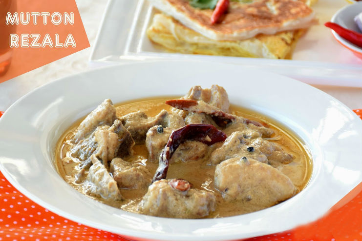

Mutton Rejala

Description:
Mutton Rezala, A Bengali Dish is a delicious curry which is made in Yogurt, Cashew and Poppy seeds paste that gives it a rich flavour. The dish is filled with loads of flavour and subtle taste from the use of cardamom and nutmeg. The curry is best enjoyed with Garlic Naan or Wheat paratha for a perfect evening meal.
Ingredients:
Paste
- 3 Tbsp Plain Yogurt
- 3 Tbsp Fried Onion
- 10-12 Pcs Cashew
- ¼ Tsp Mace
- 10-12 Pcs Raisin
Cooking
- ¼ Cup Cooking Oil
- 2 Tbsp Unsalted Butter
- 3 Pcs Onion
- 2 Tbsp Ginger Paste
- 1 ½ Tbsp Garlic Paste
- 2 Pcs Bay Leaves
- 2 Pcs Cinnamon Sticks
- 5 Pcs Cardamom
- 5 Pcs Cloves
- ¼ Tsp Red Chili Powder
- 1 Tbsp Cumin Powder
- 1 Tbsp Coriander Powder
- 1 Kg Mutton
- 1 Tsp Salt
- ¼ Tsp Peppercorn
- 1 Cup Water
- 1 Tsp Garam Masala
- 3-4 Pcs Prune
- 3 Pcs Dry Red Chilies
- 1 Tbsp Ghee
- 1 Cup Milk
- 2 Tbsp Fried Onion
- ½ Tsp Kewra Water
Steps:
- Make the paste using plain yogurt, fried onion, cashew, mace and raisin
- In a pan, add cooking oil, butter and sliced onion then sauté until tender
- Add ginger paste, garlic paste, bay leaves, cinnamon sticks, cardamom, cloves and give it a mix
- Add red chili powder, cumin powder, coriander power and stir on medium-high heat while gradually adding splashes of water to prevent any burning of spices
- Now add the meat along with salt and peppercorn and sauté for 10 minutes on medium-high heat
- Add the paste and water and cook for 25 minutes on low-medium heat with lid on
- Add garam masala, prunes, dry red chili, clarified butter, and warm milk
- Cook for another 15-25 minutes on low heat with lid on
- Cook for another 15-25 minutes on low heat with lid on
- Enjoy!